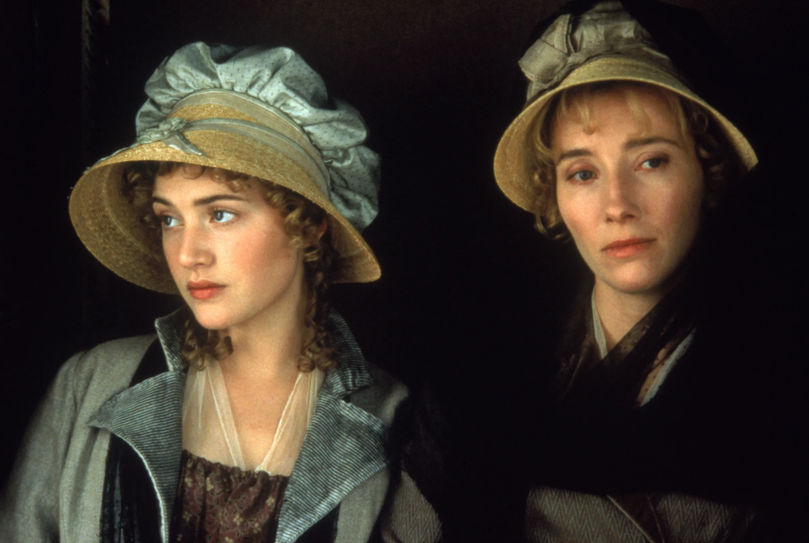
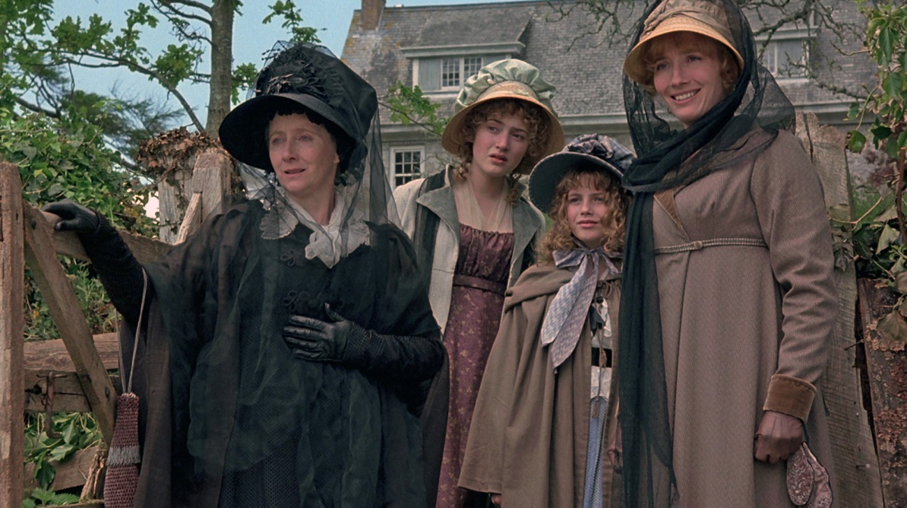
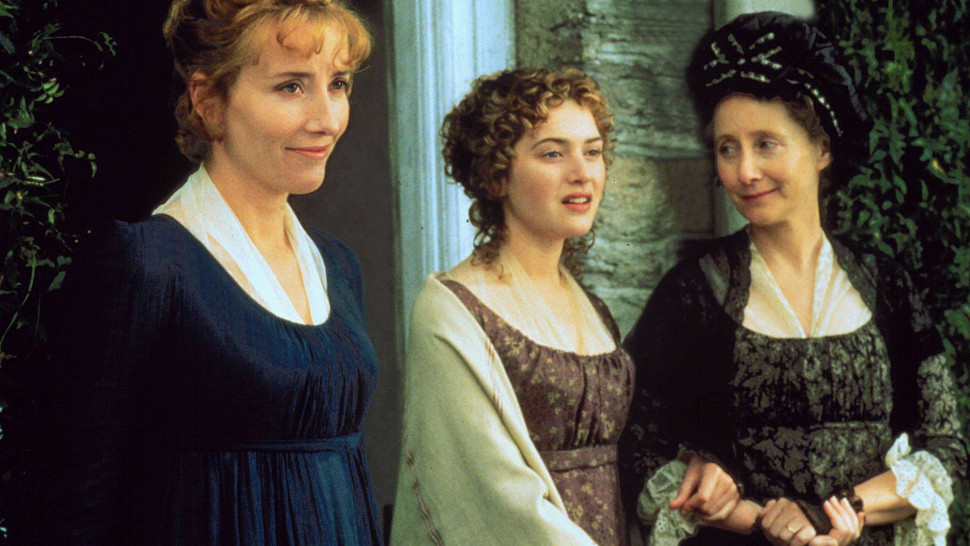

What has happened so far? |
|
|---|---|
|  | Chapter 1The narrator describes the Dashwood family, who lived at Norland Park in Sussex, England. The owner of the property was a single man and he invited his nephew Mr. Henry Dashwood to live with him at Norland. Henry had a son by a previous marriage and three daughters by his current wife. Henry Dashwood’s son, John Dashwood, had a substantial fortune from his mother’s family, which he increased through marriage. Thus, Norland Park was of more importance to John’s half-sisters, who had less secure fortunes, than it was to him. Nonetheless, when the owner of Norland died, he left his property to John and John’s young son. John decided to give his three sisters 1,000 pounds each, and was pleased with his own generosity. Right after Henry’s funeral, John’s wife moved into Norland Park immediately without giving Henry’s wife Mrs. Dashwood any notice. John’s wife Fanny “had never been a favourite with any of her husband’s family,” and now her “ungracious behaviour” did nothing to change this. Mrs. Dashwood was offended by John’s wife Fanny and thought of moving out, but her eldest daughter Elinor persuaded her not to. The narrator says that Elinor “possessed a strength of understanding, and coolness of judgment” in addition to “an excellent heart.” Elinor’s younger sister Marianne was similarly “sensible and clever,” but was “eager in everything” and lacked a sense of moderation. Marianne and her mother indulged in extreme grief and unhappiness at the recent turn of events: “they gave themselves up wholly to their sorrow.” Elinor, by contrast had more moderation in her behavior. The youngest of the three daughters, Margaret, was “good-humoured” and “well-disposed.” She had some of Marianne’s romantic sensibility but without her modicum of sense. |
|  | Chapter 2John’s wife Fanny became the mistress of Norland, and Mrs. Dashwood and her daughters became mere guests. Mrs. Dashwood actually liked remaining at Norland, where everything reminded her of her former happiness with her late husband, because she enjoyed getting carried away in her own sorrow. Fanny disapproved of John’s plan to give his sisters 3000 pounds. She asked him to reconsider and said that he was taking money away from their own child. She thought that John owed his half-sisters nothing because they weren’t really his sisters. John told his wife that he couldn’t disobey his fathers dying request, but Fanny said that he hadn’t stipulated that John had to give his sisters money. She persuaded him to reduce his gift from 3000 to 1500 pounds. She said that the three daughters had a sizable fortune already from their parents, and John agreed that it would perhaps be more sensible to give Mrs. Dashwood one hundred pounds a year. Fanny worried that under such an arrangement Mrs. Dashwood would live for a long time and they would end up losing a great deal of money. She cautioned John against agreeing to such an annuity. John agreed that annuities were unwise and thought he might simply give his sisters an occasional gift of some money. Fanny said she thought Henry probably didn’t even intend for him to give his sisters money, but only wanted him to look out for them in a general way. She convinced him that his sisters really didn’t need any money from him and already had enough for a comfortable life. John quickly changed his mind and decided to give his sisters nothing other than some occasional “neighbourly acts” of kindness. |
|  | Chapter 3Mrs. Dashwood and her daughters stayed at Norland for several months while they tried to find a new home. Elinor prudently rejected some possible homes that Mrs. Dashwood liked, but that were too expensive for them. Mrs. Dashwood had learned of John’s promise to his father, and so was confident that he would help her and her daughters financially. The more Mrs. Dashwood learned of Fanny’s character, the more she disliked her. However, she didn’t mind living at Norland that much, because of a “growing attachment” between Elinor and Fanny’s brother, Edward Ferrars. The narrator notes that some mothers might have been worried about Edward’s fortune, which depended entirely on inheriting from the will of his mother, but Mrs. Dashwood’s only concern was that Elinor and Edward were fond of each other. Edward’s family wanted him to seek some kind of distinguished career, but he simply desired “domestic comfort” and quiet. Mrs. Dashwood didn’t take much notice of Edward when he first arrived at Norland, but then Elinor mentioned how different he was from Fanny. She told her mother she’d like or esteem Edward, but Mrs. Dashwood said she couldn’t like him but only love him. Mrs. Dashwood thought that Edward and Elinor would certainly be married before long. She told this to Marianne, who lamented that Edward lacked any taste in music, art, or books. She conceded, though, that Elinor didn’t have the same feelings as she did, and so perhaps Elinor could be happy with Edward. Marianne then despaired of ever finding a husband, but her mother assured her she would. |